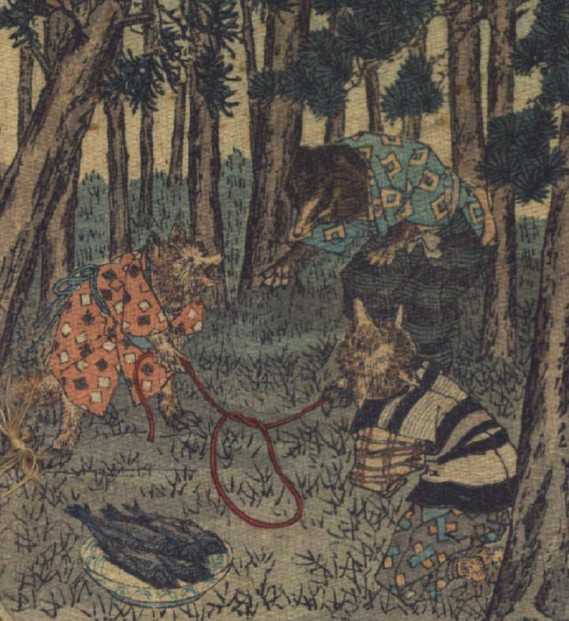

森の中で、狐が狸に罠を仕掛けている。子狐と親狐は輪を作った縄の両端を持ち、手前に魚を持った皿を置いている。奥に立っている狸は、中腰になり、魚を取ろうかどうか迷っているような様子をしている。
著作者：J.Dautremer／出典：親書誌：U426_nichibunken_0120：La victoire du petit renard／日付：2006／資源識別子：U426_nichibunken_0120_0001_0000
Copyright (c)2010- International Research Center for Japanese Studies, Kyoto, Japan. All rights reserved.